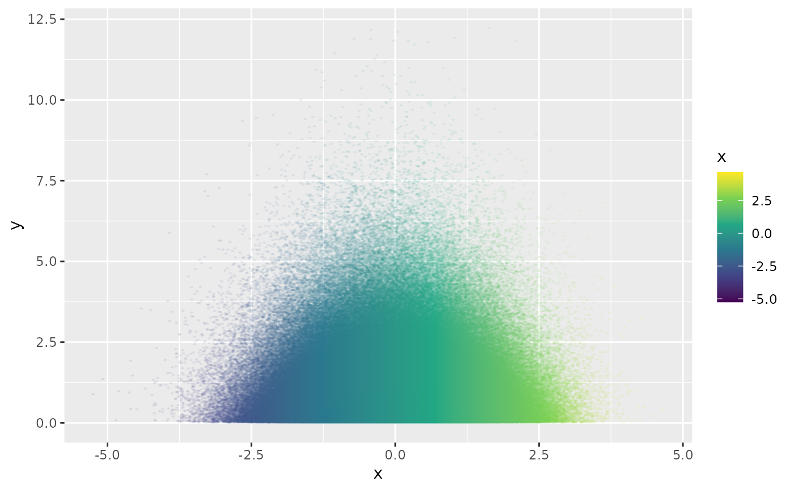

geom_scattermore.Rdggplot2::ggplot() integration. This cooperates with the rest of ggplot
(so you can use it to e.g. add rasterized scatterplots to vector output in
order to reduce PDF size). Note that the ggplot processing overhead still dominates
the plotting time. Use geom_scattermost() to tradeoff some niceness and
circumvent ggplot logic to gain speed.
geom_scattermore(
mapping = NULL,
data = NULL,
stat = "identity",
position = "identity",
...,
na.rm = FALSE,
show.legend = NA,
inherit.aes = TRUE,
interpolate = FALSE,
pointsize = 0,
pixels = c(512, 512)
)passed to ggplot2::layer()
Remove NA values, just as with ggplot2::geom_point().
Default FALSE, passed to grid::rasterGrob().
Radius of rasterized point. Use 0 for single pixels (fastest).
Vector with X and Y resolution of the raster, default c(512,512).
Accepts aesthetics x, y, colour and alpha. Point size is fixed for
all points. Due to rasterization properties it is often beneficial to try
non-integer point sizes, e.g. 3.2 looks much better than 3.
library(ggplot2)
library(scattermore)
ggplot(data.frame(x = rnorm(1e6), y = rexp(1e6))) +
geom_scattermore(aes(x, y, color = x),
pointsize = 3,
alpha = 0.1,
pixels = c(1000, 1000),
interpolate = TRUE
) +
scale_color_viridis_c()
